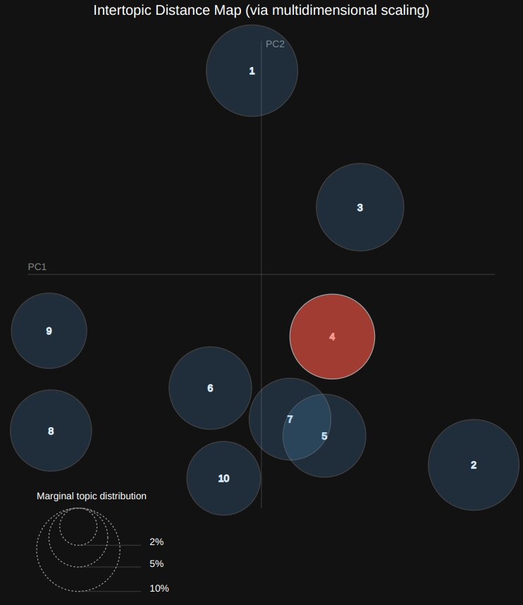
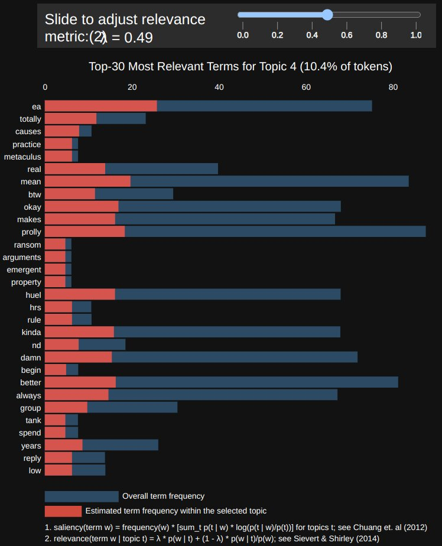

topic analysis and decision making
Written on
Topic analysis or Latent Dirichlet Allocation (LDA) breaks a collection of documents (such as tweets) up into topic areas and calculates probabilities for words to appear both overall and within specific areas. It can thus give a picture of what sorts of things are being written about as well as which words tend to be used together to talk about each thing; this knowledge can be useful for decision making.
For example, suppose I would like to maintain a certain balance between areas that I tweet about. LDA might reveal that I hardly ever talk about something I thought I tweeted about often, and as a result I might decide to tweet about that topic more often. It could also reveal patterns in the ways I'm using words to discuss those topics. For example, maybe I use language that's too informal to talk about things on which I'd like to confer a bit more gravitas.
The analysis shown below is based off 3,000 of my tweets; they have been broken up into 10 topic areas. I've selected the one that most closely cooresponds to "things having to do with Effective Altruism (EA)". We see words like "causes" and "huel" (a meal-replacement drink) showing up, but not words from another of my topic areas, "systems thinking." And realizing this, I might decide to try mixing these areas more when I talk about them if, e.g., I think that systems thinking might benefit EA causes.


The analysis provides two different frequency measures for word occurrences, one being the probability of a word appearing in a given topic area, and another (called "lift") that divides the probability by that word's overall frequency in the document. The reason for having these two measures is that we might not want a word to appear high on the list just because it gets used a lot everywhere; we can adjust how much each measure contributes to the ordering of words within topic areas. I've chosen to weight them equally for the above example; it's useful to play around with that parameter and see how it affects the results.